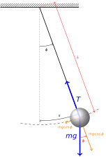
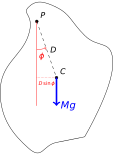

5 Pendulums
A pendulum is a mechanically simple oscillating system; its oscillation can be considered SHM for small displacements. A simple pendulum is shown in Figure 5.1, and it is worth quickly revisiting this example as we will extend this in our further examples.
At its core, a pendulum is an oscillator whose oscillation is based on a rotational, rather than a linear displacement. Consequently the dynamics governing pendulums is slightly different to a linear oscillator, however they are a good example to show that we can approximate small displacements as “simple harmonic oscillations”.
We can loosely break down pendulums (pendula?) into a number of categories depending on their nature. Note this is not an exhaustive list!
- A simple pendulum. This is the simplest pendulum we can consider; a point mass attached to a light string, swinging under the influence of gravity alone. We approximate this in reality by using a thin string and a heavy mass such that the mass of the string is insignificant in the calculations.
- A physical pendulum. This is similar in setup to the simple pendulum, however we take into account the mass of the rod connecting the mass to the pivot (note a “rod” rather than a “string”) as well as the physical size of the mass. This requires determination of moments of inertia.
- A torsional pendulum. This is a pendulum whose oscillations are not driven by gravity - rather by the forces induced when a horizontally rotating mass twists a fixed vertical support. This is often used in portable mechanical clocks where there is not space for a physical pendulum.
- A double (or compound) pendulum. This is a system of two (or more!) pendula connected end to end, such that the end of one pendulum forms the pivot of the next. It results in motion which is described as chaotic.
We will examine the case of the simple pendulum, the physical pendulum, and will take a brief look at the double pendulum.
5.1 The simple pendulum
The mass of the pendulum can be considered to oscillate along the arc \(s\) (Figure 5.1), where the restoring force becomes \(mg \sin \phi\). This force then causes an acceleration along the arc, \(\frac{\mathrm{d}^2 s}{\mathrm{d} t^2}\), with the equation of motion becoming:
\[ mg \sin \phi = - m \frac{\mathrm{d}^2 s}{\mathrm{d} t^2} \tag{5.1}\]
This however relates the variable \(\phi\) relative to the arc length \(s\); it is more useful to relate this to a single variable. We can derive an expression for this oscillation with respect to angle as follows:
- The arc length \(s\) can be calculated as \(s = L \phi\).
- The second derivative of \(s\) with respect to time can then be found:
\[ \frac{\mathrm{d}^2 s}{\mathrm{d} t^2} = L \frac{\mathrm{d}^2 \phi}{\mathrm{d} t^2} \tag{5.2}\]
We can then substitute this into Equation 5.1:
\[ m \frac{\mathrm{d}^2 s}{\mathrm{d} t^2} = m L \frac{\mathrm{d}^2 \phi}{\mathrm{d} t^2} = -mg \sin \phi \tag{5.3}\]
A quick rearrangement gives us the equation of motion for a simple pendulum.
\[ \frac{\mathrm{d}^2 \phi}{\mathrm{d} t^2} = -\frac{g}{L} \sin \phi \tag{5.4}\]
For small displacements (small \(\phi\)), the equation of motion can be considered as in Equation 5.5:
\[ \frac{\mathrm{d}^2 \phi}{\mathrm{d} t^2} = -\frac{g}{L}\sin \phi \approx -\frac{g \phi}{L} \textrm{ for small } \phi \tag{5.5}\]
This is SHM, with angular frequency \(\omega\) and period \(T\) found as in Equation 5.6:
\[ \omega^2 = \frac{g}{L} \hspace{15pt} and \hspace{15pt} T = 2\pi \sqrt{\frac{L}{g}} \tag{5.6}\]
The solution for the equation of motion of this system then becomes Equation 5.7:
\[ \phi = \phi_0 \cos (\omega t + \delta) \tag{5.7}\]
…where \(\phi_0\) is the amplitude of the system and \(\delta\) is the phase constant. Notice that, for the pendulum we express the amplitude in terms of the angle of the string rather than an absolute distance (shown as \(s\) in Figure 5.1).
5.2 The Physical Pendulum
Many oscillating systems demonstrate rotational oscillations under gravity akin to the simple pendulum. In this case, the system rotates around a pivot, \(P\), and this can then be considered as a pendulum with the centre of mass acting as the ‘bob’. An example of a general system is shown in Figure 5.2.

Now, as a restoring force, we consider the torque of the centre of mass around the pivot. Remember that the torque is defined as the product of the force and the perpendicular distance of the force’s line of action from the pivot. If using vectors, this is considered as the cross product of the force vector \(\mathbf{F}\) with the position vector of the centre of mass from the pivot, \(\mathbf{D}\) (Equation 5.8):
\[ \begin{array}{rcl} \textrm{Torque about pivot $P$} &=& \mathbf{D} \times \mathbf{F} \\ &=& \mathbf{\hat{n}}~ |D| |F| \sin \phi \\ &=& \mathbf{\hat{n}}~ D mg \sin \phi = \tau \mathbf{\hat{n}} \end{array} \tag{5.8}\]
In this case, the unit vector \(\mathbf{\hat{n}}\) is perpendicular to the plane of rotation and is included for completeness’ sake. What we are interested in is the magnitude of this torque vector, \(\tau\).
Recall from rotational motion that the angular acceleration \(\alpha\) and the torque \(\tau\) are connected via the moment of inertia \(I\) (Equation 5.9):1
\[ \begin{array}{rcl} I \dfrac{\mathrm{d}^2 \phi}{\mathrm{d} t^2} &=& I\alpha =\tau \\ &=& -mgD \sin \phi \end{array} \tag{5.9}\]
We now approximate this for small \(\phi\):
\[ \frac{\mathrm{d}^2 \phi}{\mathrm{d} t^2} = -\frac{mgD\phi}{I} = -\omega^2 \phi \]
This allows us to identify expressions again for the angular frequency, \(\omega\), and the period \(T\) (Equation 5.10):
\[ \omega^2 = \frac{mgD}{I} \hspace{15pt} and \hspace{15pt} T = 2\pi \sqrt{\frac{I}{mgD}} \tag{5.10}\]
We can compare this result with that for the simple pendulum shown in Equation 5.6; if we remember that the moment of inertia \(I\) is defined as \(I = mD^2\), we can substitute this into Equation 5.10 and see that this is a general case for any rotating body:
\[ T_\textrm{simple pendulum} = 2\pi \sqrt{\frac{I_\textrm{simple pendulum}}{mgD}} = 2\pi \sqrt{\frac{mD^2}{mgD}} = 2\pi \sqrt{\frac{D}{g}} \]
…giving us our expected result (where the general term \(D\) can be replaced for the length of the simple pendulum, \(L\)).
5.3 The Double Pendulum
The double pendulum is a case study for a particular type of coupled oscillator; we take a simple pendulum (a light rod suspended from a pivot with a mass \(m_1\) at the end), and couple to it a second simple pendulum with mass \(m_2\); the pivot of this second pendulum being \(m_1\). It is a deceptively complex problem, as it looks from the outset to be fairly simple. However, we rapidly find that while at small amplitudes, the oscillations are predictable, as the amplitude increases, tiny variations in the starting conditions for the pendulum can have wildly different effects, and solving the equations of motion is anything but trivial.
Note that the appearance of the negative sign indicates that the torque force is opposite to the direction of increasing \(\phi\)↩︎